Food and groceries delivery from Lahore's best restaurants and shops
All restaurants
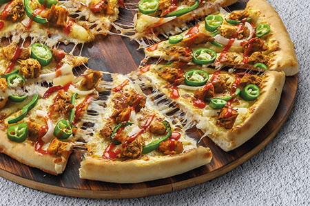
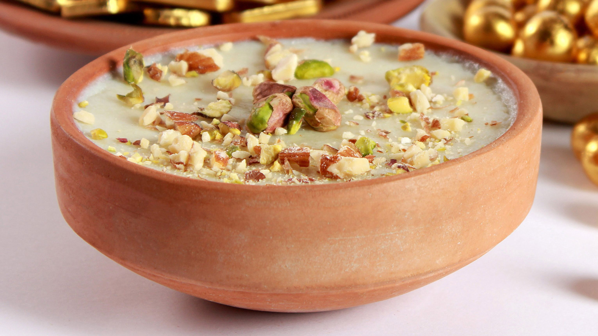
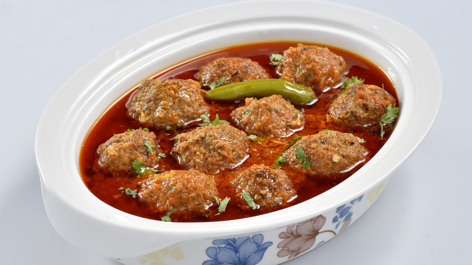
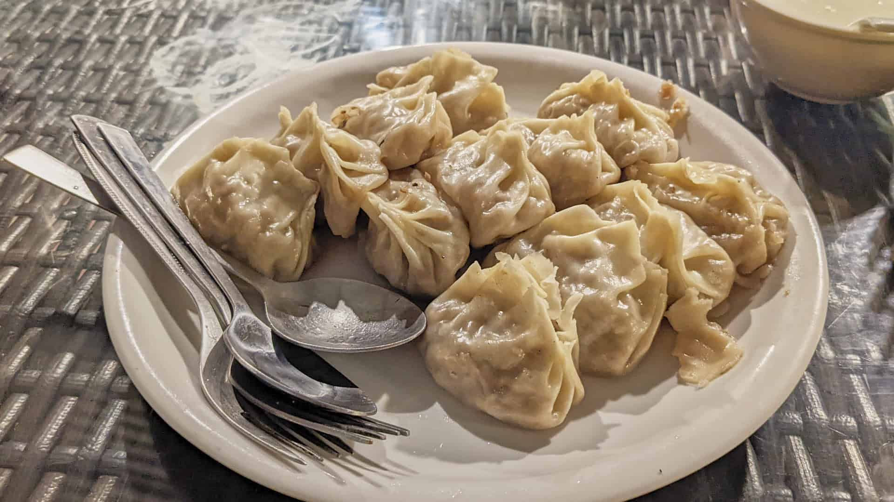
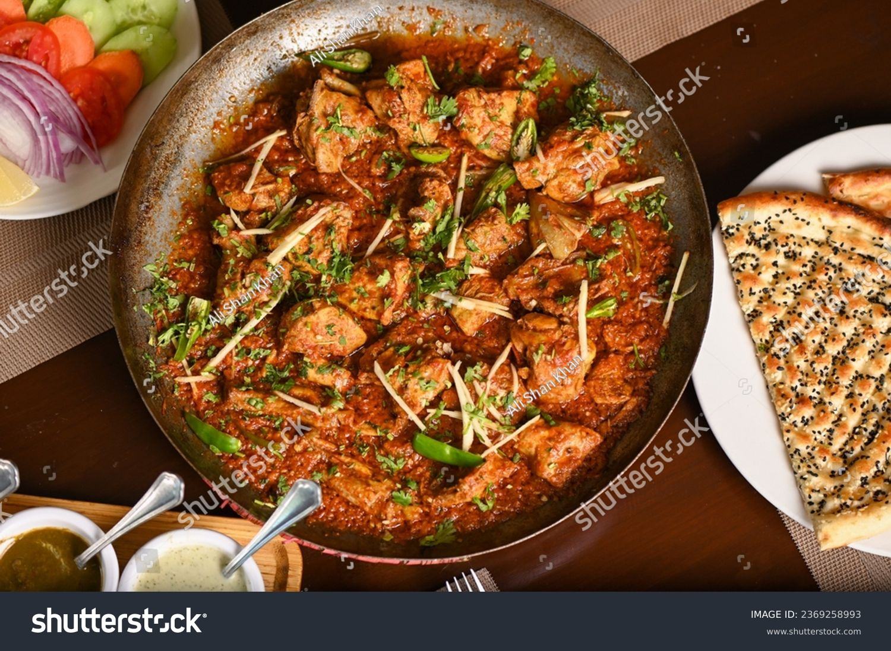
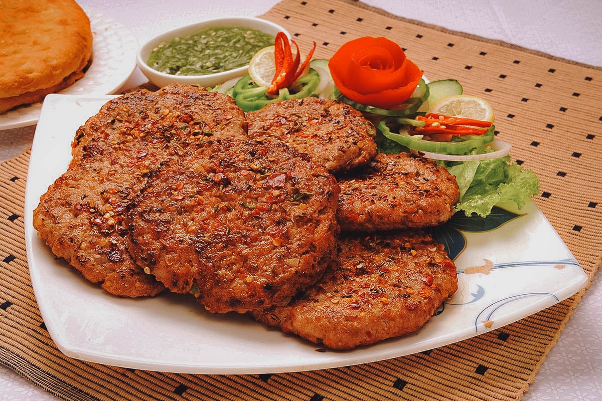
Food Category
Lahore, Pakistan's second largest city and the capital of Punjab province, is home to over seven million people and to thousands of years of rich history and culture. Due to the world renowned historic garden in and around the whole city, Lahore is often referred to as the Mughal City of Garden. The provincial capital is also home of a sumptuous variety of local Punjabi and Mughali cuisines steeped in time-tested traditional cooking methods.
Considered as a culinary Mecca of Pakistan, the food legacy of the city is almost equally popular as its renowned Mughal architecture and monuments. Thanks to the numerous ethnically diverse communities in the region, you can treat yourself to diverse dishes, ranging from authentic local flavours to exotic Arabian cuisines to definitive Karachi dishes to famous fast food varieties. Whether you are planning to indulge in street food, experience a sophisticated dining with your special someone, or enjoy casual hangout with friends, restaurants in Lahore are going to leave you spoilt for choice. Like to treat yourself to a lavish meals in Awan Town? Looking for a quick breakfast before you head out to your office in Gawalmandi?
Prefer to munch on to something to keep yourself awake in the night while pursuing your education in Johar Town? Well, now you can find the best restaurants in Lahore serving at your doorsteps via foodpanda's super-fast online food delivery in Lahore.
10 fantastic restaurants in Lahore to visit before you die!
Although the city bursts with numerous dining options, these 10 restaurants in Lahore have conquered the taste buds of the local folks and have earned a special place in their hearts by serving amazing food that would please anyone!
✓ Cosa Nostra: recommended for its fine dining experiences, pizzerias, and desserts
✓ Andaaz: a must-visit for seafood lovers
✓ Pompei: for all those who long for authentic Karachi food
✓ Mouthful: a favourite among health-conscious foodies
✓ Bundu Khan: desi food at its best – do not miss their famous mutton chops
✓ Cafe Aylanto: a contemporary dining restaurant famous for its chili garlic prawns, and main course with classic Moroccan chicken combination
✓ Bashir Dar-ul-Mahi Machee: for soft and succulent fried fishes
✓ Tokyo: sushi and Japanese food fans should certainly not give this restaurant a miss
✓ Sweet Affairs: your go-to destination for the most heavenly desserts in the city
✓ Cuckoos Den: check out for Tawa Chicken, BBQs, Platters, Paranthas, and Curries
Order food online in Lahore: foodpanda makes it absolutely easy for you!
What's your favourite cuisine in Lahore? Is it the much-famous 'Tawa Chicken' dish'? The soft and spicy kebabs? Or, the tasty and filling Parantha Rolls? Our choice of best restaurants in Lahore offer a wide array of delicacies for you to savour! From Lahore’s most high-end eateries to budget restaurants, we have got it all covered. Simply take advantage of foodpanda's food delivery service in Lahore, and relish your favourite cuisines at the comfort of your home or workplace.
Now, imagine the sheer convenience and ease foodpanda brings to your life! You don't have to pay late-night visits to the grocery stores in your neighbourhood (or wait until they finally open) just to buy an ice-cream. You don't have to skip your meals because of the lack of time for cooking. You don't have to battle the traffic after a hectic day in search of good food. All the dishes you might fancy can be savoured in the cosiness of your sofa.
And you know what? We don't stop with just Lahore. Foodpanda’ online food ordering and home delivery service is available in a dozen of Pakistani cities. To name a few, we delivery in Karachi, Rawalpindi and of course in the national capital Karachi.

 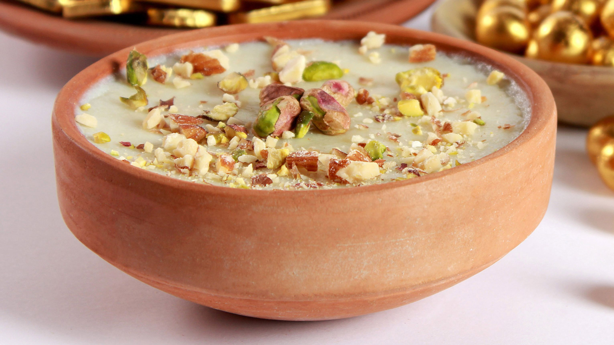
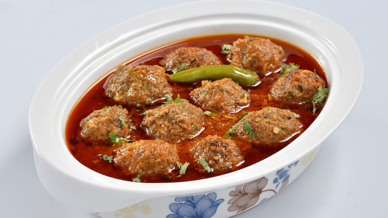
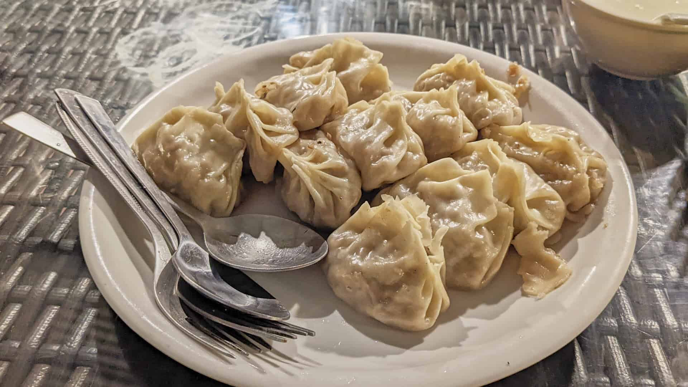
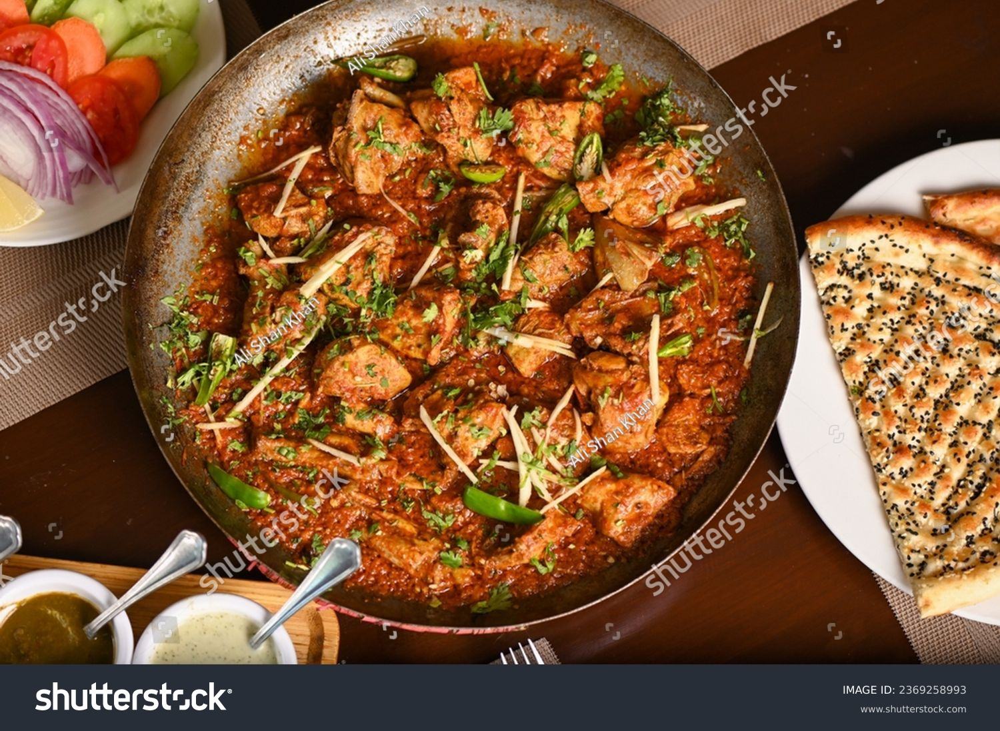
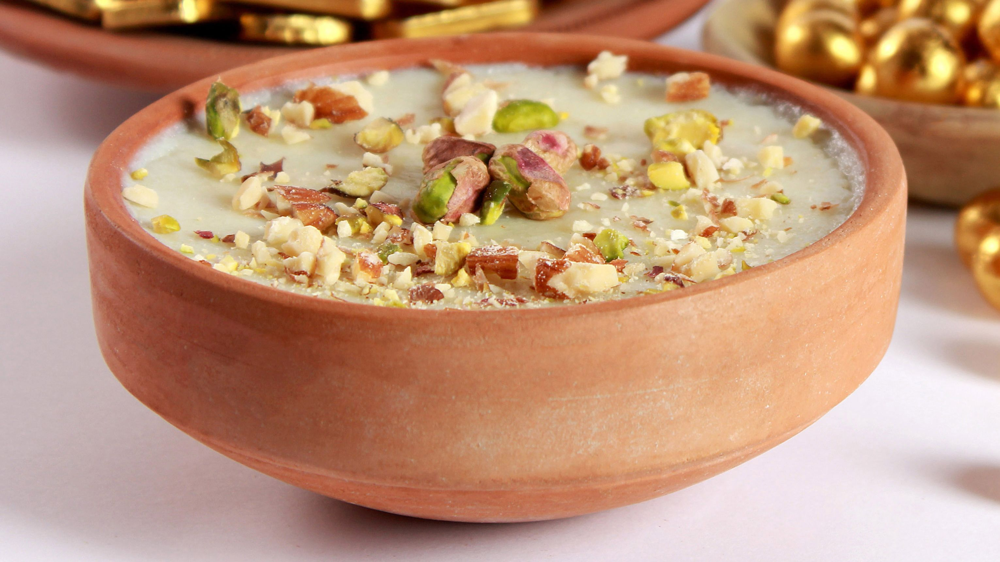
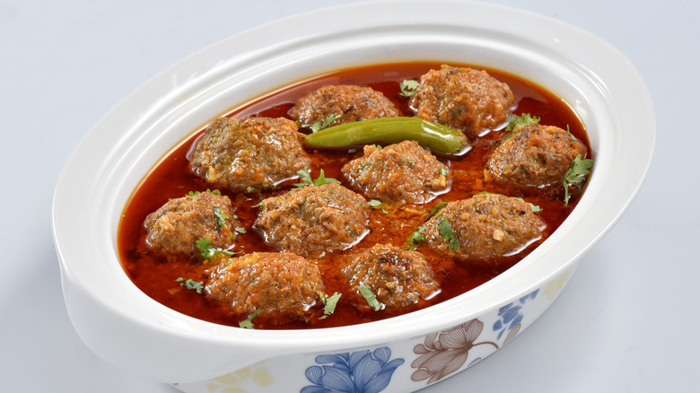
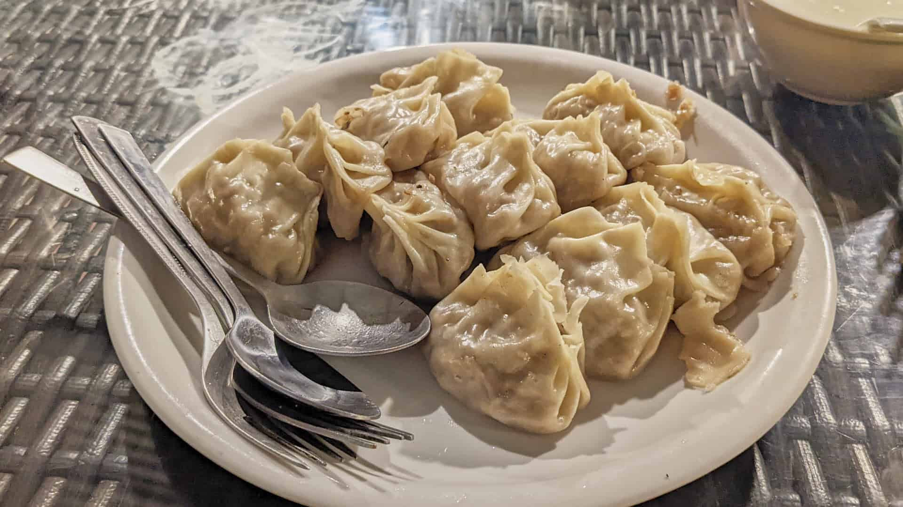
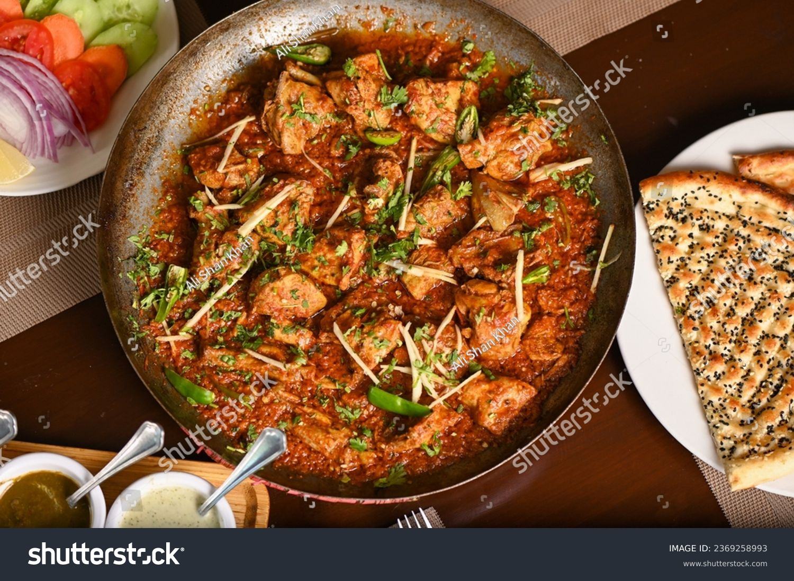
 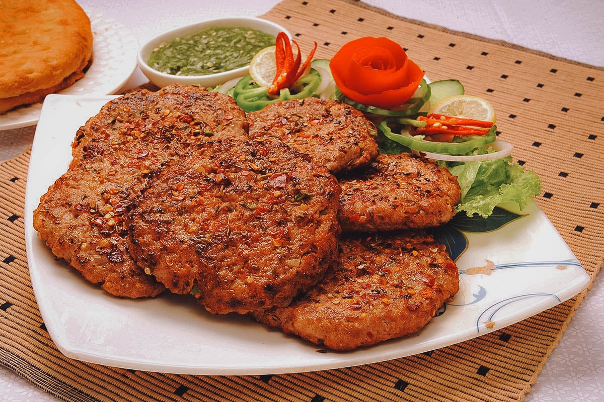
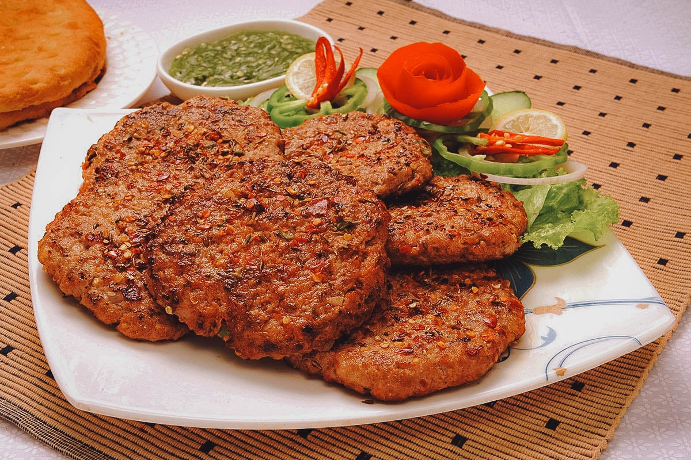